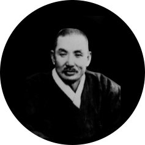
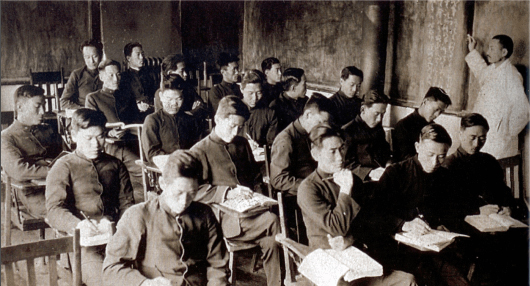

GODANG
Jo Man-sik was an activist in Korea's independence movement. He became involved in the power struggle that enveloped North Korea in the months following the Japanese surrender after World War II, but the Soviet-backed communists eventually forced him from power. Placed under house arrest in 1946, he was reported to have died in a North Korean prison in 1950.
In 1905 Jo entered the Soongsil Middle School as a student. In his youth he was an activist within Korea's Christian community. After Japan's annexation of Korea in 1910 he became involved with his country's independence movement. His participation in the March 1, 1919. “3·1” (Korean: Sam-Il) peaceful protest marches against Japanese colonialism led to his arrest and detention, along with tens of thousands of other Koreans. After his release, he dedicated himself to the non-violent resistance of Japanese occupation, a stance which earned him the epithet "The Gandhi of Korea". He advocated the principle of self-sufficiency for Korea. Jo formed the Korean Products Promotion Society, intending to encourage Koreans to buy domestically-produced goods to instill Korean spirit.
In 1905 Jo entered the Soongsil Middle School as a student. In his youth he was an activist within Korea's Christian community. After Japan's annexation of Korea in 1910 he became involved with his country's independence movement. His participation in the March 1, 1919. “3·1” (Korean: Sam-Il) peaceful protest marches against Japanese colonialism led to his arrest and detention, along with tens of thousands of other Koreans. After his release, he dedicated himself to the non-violent resistance of Japanese occupation, a stance which earned him the epithet "The Gandhi of Korea". He advocated the principle of self-sufficiency for Korea. Jo formed the Korean Products Promotion Society, intending to encourage Koreans to buy domestically-produced goods to instill Korean spirit.

Jo Man-sik(조만식)
1883~1950
pen-name: Godang
pen-name: Godang
In August 1945, around the end of World War II, Godang organized governing councils throughout the north so as to maintain stability in the power vacuum. The councils members were generally composed of right-wing nationalists who opposed communism. The Army of the Soviet Union arrived in Pyongyang following the Japanese surrender and placed Jo under house arrest. It is generally believed that Jo executed along with other political prisoners during the early days of the Korean War.

Godang is lecturing < Introduction to Law > at Soongsil University. (1930's)
12th Godang International Conference on Law schedules will be updated soon